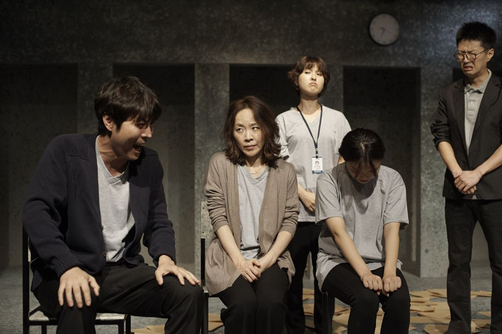

박상현 작·연출

"그래도 고발자로 나설 것인가?" 이 질문을 객석에 던지기 위한 공연. 거대 비자금 장부를 발견한 대기업 임원, 동료의 입시 비리를 알게 된 대학교수, 혈액 관리 부실을 알게 된 적십자사 직원, 학교의 종교 강요를 거부한 고등학생…. 불의를 폭로한 내부 고발자들은 조직 안에서 바로잡으려다 실패하고, 결국 고발에 나서지만 압박과 언론의 공격을 받고 조직에서 쫓겨나 건강과 가족까지 잃기도 한다. 내면의 갈등, 조직 안의 따돌림, 사회와 언론의 왜곡이라는 삼중의 갈등을 비드라마적 구조 속에 연속으로 솟구치게 한다.
2017.9.22–10.15 / 나온씨어터
작·연출: 박상현
출연: 정나진, 최지연, 양동탁, 이동영, 김태훈, 황미영, 정양아, 김철진, 이장환, 박근영, 박하늘, 김청순, 최지현
드라마터그: 손원정
무대·조명: 남경식
영상: 윤민철
음악: 민경현
움직임지도: 홍예원
의상: 박윤혜
사진: 박정근
홍보영상: 박영민
무대감독: 최문석
조연출: 구자윤
기획: K아트플래닛
이전: 〈할미꽃단란주점 할머니가 멜론씨를 준다고 했어요〉 | 다음: 〈폐지의 역사 (I'M F_)〉
아카이브로 돌아가기 | 아무 작품이나
발행일 2026.11.10